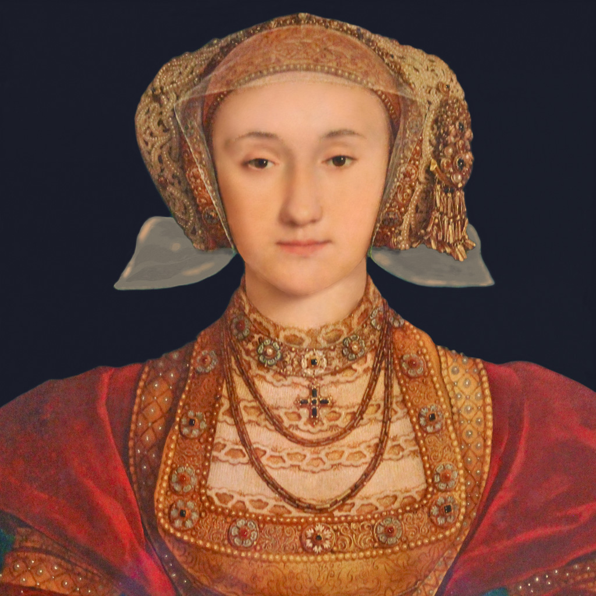

HENRI VIII đã 42 tuổi. Cả Âu châu đã đồn đãi ông là một ông vua “sát thê”. Ba Hoàng hậu: một bà bỏ trốn, một bà bị chặt đầu, một bà chết yểu. Ông quyết định lập lại gia đình và chọn một người vợ thật vừa ý. Nghe Đại Sứ ở Ý báo cáo rằng công chúa Christine de Milan đẹp lắm và ngoan lắm, vua phái người đến cầu hôn. Nhưng công chúa tra lời: “ Nếu tôi có hai cái đầu, thì tôi xin sẵn sàng dâng lên vua Henri VIII một cái”. Nàng công chúa tỏ ý sợ qua làm hoàng hậu nước Anh sẽ bị vua Henri VIII chặt đầu như Anne Boleyn, nên công chúa vội vàng thối thác.
Thủ tướng Thomas Cromwell đề nghị một người đàn bà khác: ANNE DE CLÈVE, em gái của quận công de Clèves, nước Đức, là người có uy tín rất lớn đối với tình hình nội trị của Đức quốc.
Nghe Thomas Cromwell khen Anne de Clève là một giai nhân tuyệt diễm, vua Henri VIII phái họa sĩ Holbein sang Đức để vẽ chân dung của nàng đem về cho vua xem. Sự thật Anne de Clève là một người nhan sắc rất tầm thường, vô duyên, mặt mũi xấu xí, tay chân cục mịch. Đôi mắt hí, nước da tái mét. mặt rỗ, mũi kỳ lân, điệu bộ như đàn ông, cử chỉ thô kệch như một kẻ tôi tớ. Nhưng họa sĩ Holbein ăn tiền hối lộ, vẽ dung nhan của công nương de Clèves như một mỹ nhân yêu kiều khả ái.
Vua Henri VIII xem hình vẽ, hoàn toàn ưng thuận. Lập tức nhà vua sai sứ sang Đức để rước vị hôn thê.
Anne de Clève sang Anh, được vị Hồng y giáo chủ của giáo phái Anh quốc là Cramner, đại diện Anh hoàng, cùng với năm vị Giám mục, ra bến tàu để chào đón Tân Hoàng hậu, một buổi chiều tháng Giêng năm 1540.
Nhưng than ôi, đến khi Anne de Clève được đưa về cung điện để diện kiến cùng vua, thì Henri VIII cau mày, thất vọng, vị hôn thê xấu quá, chẳng giống một tí nào với bức vẽ của họa sĩ Holbein. Nhà vua tỏ vẻ bất bình và khinh ghét. Vua tức giận bảo với Thủ tướng Thomas Cromwell: “Cù lần lắm! Cô nương cù lần lắm! Người ta lừa gạt trẫm, trẫm không lấy cái con quỷ ấy đâu!”
Thủ tướng Cromwell muốn tìm cách bênh vực Anne de Clève, nhưng Henri VIII nhăn mặt bảo:
- Các người phỉnh gạt trẫm. Không đời nào Trẫm chịu lấy con ngựa cái của nước Đức ấy đâu.
Vua bỏ đi.

Lúc Anne de Clève chưa đến và vua còn chờ đợi nàng, thì vua có để sẵn một chiếc áo măng tô đắt giá bằng zibeline định để tặng Tân Hoàng hậu. Nhưng khi Vua thấy mặt Anne de Clève rồi, vua bỏ đi, và đem cất luôn chiếc áo măng tô, không cho cô nàng nữa.
Sự từ chối của Anh Hoàng không cưới Anne de Clève sau khi đã ưng thuận rước nàng về Anh quả là một hành động xấc xược và vụng về, có thể gây ra nhiều rắc rối ngoại giao giữa nước Anh và các nưóc Âu châu theo giáo phái Luther.
Vua Henri VIII đành phải nghe lời Thủ tướng Thomas Cromwell, tuy trong lòng ông rất tức giận. Thủ tướng là người đã mưu mô để cử Anne de Clève làm Tân Hoàng hậu.
Hôn lễ được vua chấp thuận và cử hành ba ngày sau khi Anne de Clève đến London, nhưng vua ra lệnh làm đám cưới rất sơ sài, cấm tất cả các cuộc liên hoan, bãi bỏ mọi sự đón rước linh đinh, và không cho chuông nhà thờ reo báo tin mừng.
Năm tháng sau, vua ly dị với Anne, cho nàng một số tiền và hai lâu đài ở Richmond, bắt nàng đến trú ẩn nơi ấy.
Còn Thủ tướng Cromwell, thì Vua truyèn lệnh bắt giam trong tháp London vì tội phản bội, bị xử chặt đầu ngày 28 tháng 7 năm 1540.